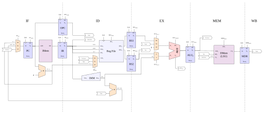
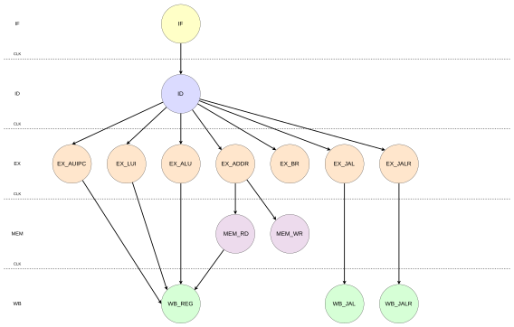
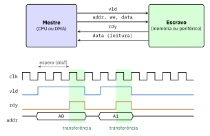

Microarquitetura multiciclo¶
A microarquitetura multiciclo representa uma evolução significativa em relação ao modelo monociclo. Enquanto no monociclo cada instrução é completamente executada em um único pulso de relógio, o multiciclo divide a execução em múltiplos ciclos, permitindo frequencies de operação mais altas e melhor utilização dos recursos de hardware.
A Transição: Single-Cycle para Multi-Cycle¶
Motivação Física: O Problema do Clock¶
Na arquitetura monociclo, o período do clock é determinado pelo caminho crítico — o maior tempo de propagação combinacional ao longo do circuito. Este caminho crítico inclui obrigatoriamente:
- Leitura da memória de instruções
- Decodificação e leitura do banco de registradores
- Execução na ALU
- Acesso à memória de dados (para loads/stores)
- Escrita no banco de registradores
Como todas essas etapas devem caber em um único ciclo, o clock deve ser lento o suficiente para acomodar o pior caso. Isso significa que instruções simples (como ADD entre registradores) são forçadas a esperar, pois a sua execução real é muito mais rápida que o tempo total disponível.
A solução multiciclo: Ao dividir a execução em etapas menores e balanceadas, cada estágio pode ser completado em um tempo muito menor. O somatório dos estágios resulta em um caminho crítico por estágio significativamente reduzido, permitindo que o processador opere em frequências substancialmente maiores.
Latência de Memória¶
O modelo monociclo assume implicitamente que as memórias respondem em tempo zero — uma abstração útil para análise, mas irrealista para implementações práticas.
O problema com memórias reais:
- Memórias síncronas (block RAMs em FPGAs) tipicamente requerem 1 a 3 ciclos de latência
- Memórias externas (DDR, SRAM) podem exigir dezenas de ciclos
- O modelo monociclo não tolera essa variabilidade sem comprometer a frequência
A solução multiciclo:
A arquitetura multiciclo introduz estágios dedicados para acesso à memória. O processador pode "congelar" a FSM em estados de espera até que a memória retorne o sinal de ready, mantendo o determinismo da execução sem fixer a frequência do clock à latência máxima de memória.
O Novo Caminho de Dados (Datapath Multiciclo)¶
A principal diferença visual entre o datapath monociclo e multiciclo é a presença de registradores de estágio (pipeline registers) que separam logicamente cada fase da execução:

datapath.vhd). Os registradores de estágio, em azul, guardam os resultados entre os ciclos de uma instrução: OPC (PC da instrução), IR, RS1, RS2, ALUr e MDR, cada um com a sua habilitação de escrita. As tags indicam sinais ligados entre pontos distantes do diagrama; a mesma ULA é reaproveitada nos vários estágios.Registradores de estágio¶
No multiciclo, cada instrução ocupa vários ciclos, e o que um ciclo calcula precisa sobreviver até o ciclo seguinte. Para isso, o caminho de dados ganha registradores de estágio, cada um com a sua própria habilitação de escrita, comandada pela unidade de controle:
| Registrador | Guarda | Escrito em | Habilitação |
|---|---|---|---|
OPC (old PC) |
O endereço da instrução corrente, para os cálculos relativos ao PC (desvios, jal, auipc) |
IF | OPCWrite |
IR |
A instrução lida da memória | IF | IRWrite |
RS1, RS2 |
Os dois operandos lidos do banco de registradores | ID | RS1Write, RS2Write |
ALUr |
O resultado da ULA: valor aritmético, endereço de memória ou alvo do jalr |
EX | ALUrWrite |
MDR |
O dado lido da memória de dados | MEM | MDRWrite |
A habilitação é o que dá ao controle o domínio do tempo: um registrador só muda no ciclo em que o seu sinal está ativo, e mantém o valor nos demais. É por isso que, por exemplo, o IR continua mostrando a instrução corrente enquanto o PC já aponta para a próxima.
Reuso de hardware¶
A outra vantagem do multiciclo é a reutilização temporal: como as etapas de uma instrução acontecem em ciclos diferentes, um mesmo bloco pode servir a etapas diferentes. A ULA é o exemplo central; ela calcula:
- a operação aritmética ou lógica das instruções dos tipos R e I (em EX_ALU);
- o endereço de memória dos loads e stores,
rs1 + imediato(em EX_ADDR); - o alvo do
jalr, tambémrs1 + imediato(em EX_JALR); - o valor do
lui(0 + imediato) e doauipc(OPC + imediato).
Os multiplexadores da entrada da ULA escolhem os operandos de cada caso: ALUSrcA escolhe entre RS1 (00), OPC (01) e zero (10), e ALUSrcB, entre RS2 (0) e o imediato (1). Dois cálculos continuam com somadores próprios, porque acontecem em paralelo com outros: PC + 4, feito durante a busca, e OPC + imediato, o alvo dos desvios e do jal, que precisa estar pronto enquanto a ULA compara os operandos do desvio.
Unidade de Controle e Sincronização¶
A Máquina de Estados Finita (FSM)¶
Na arquitetura multiciclo, a Unidade de Controle é implementada como uma FSM de Moore — uma máquina de estados finitos onde as saídas dependem exclusivamente do estado atual. O arquivo main_fsm.vhd implementa esta FSM, organizada em estados que correspondem às fases lógicas de execução:

main_fsm.vhd), organizada pelos estágios IF, ID, EX, MEM e WB. Cada instrução passa por IF e ID e segue o caminho do seu tipo. Além dos estados mostrados, IF, MEM_RD e MEM_WR esperam o rdy da memória; EX_FENCE e EX_SYSTEM (CSR, ecall, mret) partem de ID; e uma interrupção pendente em ID desvia a próxima busca para o tratador.Estados da FSM¶
A FSM é definida pelo tipo t_state em main_fsm.vhd:127-134:
type t_state is (
S_IF, -- IF (Instruction Fetch)
S_ID, -- ID (Instruction Decode)
S_EX_ALU, S_EX_ADDR, S_EX_BR, S_EX_JAL, S_EX_JALR, S_EX_LUI, S_EX_AUIPC, -- EX (Execution)
S_EX_FENCE, S_EX_SYSTEM,
S_MEM_RD, S_MEM_WR, -- MEM (Memory Access)
S_WB_REG, S_WB_JAL, S_WB_JALR -- WB (Write-Back)
);
Fluxo de Estados:
-
S_IF (Instruction Fetch):
- PC é enviado para memória de instruções
- Instrução é armazenada no IR
- PC é incrementado para PC+4
-
S_ID (Instruction Decode):
- Instrução é decodificada
- Registradores rs1 e rs2 são lidos para os registradores A e B
- Imediato é gerado
-
S_EX_* (Execution):
- A ALU executa a operação conforme o tipo de instrução
- Cada variante (ALU, ADDR, BR, JAL, etc.) configura a ALU de forma diferente
-
S_MEM_RD / S_MEM_WR (Memory Access):
- Acesso à memória de dados para loads e stores
-
S_WB_* (Write-Back):
- Resultado é escrito no registrador de destino
Em uma FSM do tipo Moore, os sinais de saída dependem exclusivamente do estado atual, e não diretamente das entradas, o que torna o comportamento do controle mais estável e alinhado à divisão do processamento em ciclos bem definidos.
Tabela Completa de Transição de Estado
| Estado Atual | Condição | Próximo Estado | Descrição do Estado |
|---|---|---|---|
| IF | - | ID | Busca instrução e incrementa PC (PC+4) |
| ID | Tipo-R/I | EX_ALU | Decodifica instruções aritméticas/lógicas |
| ID | Load/Store | EX_ADDR | Decodifica acesso à memória |
| ID | Branch | EX_BR | Decodifica desvio condicional |
| ID | JAL | EX_JAL | Decodifica salto incondicional imediato |
| ID | JALR | EX_JALR | Decodifica salto incondicional via registrador |
| ID | LUI | EX_LUI | Decodifica carregamento imediato superior |
| ID | AUIPC | EX_AUIPC | Decodifica adição de imediato ao PC |
| ID | FENCE | EX_FENCE | Sem efeito neste núcleo (memória sem cache) |
| ID | SYSTEM | EX_SYSTEM | CSR, ecall ou mret |
| ID | Interrupção pendente | IF | Descarta a instrução; a busca seguinte vai para mtvec |
| EX_ALU | - | WB_REG | Operação da ALU concluída. Vai escrever no RegFile |
| EX_ADDR | Load | MEM_RD | Endereço calculado. Vai ler da memória |
| EX_ADDR | Store | MEM_WR | Endereço calculado. Vai escrever na memória |
| EX_BR | - | IF | Avalia condição (Zero) e atualiza PC se necessário |
| EX_JAL | - | WB_JAL | Calcula alvo (OldPC+IMM) imediatamente |
| EX_JALR | - | WB_JALR | Calcula alvo (rs1+IMM) e salva em ALUResult |
| EX_LUI | - | WB_REG | Soma 0+IMM. Vai para write-back |
| EX_AUIPC | - | WB_REG | Soma PC+IMM. Vai para write-back |
| EX_FENCE | - | IF | Segue para a próxima instrução |
| EX_SYSTEM | CSR válido | WB_REG | Escreve o valor antigo do CSR em rd |
| EX_SYSTEM | ecall, mret ou CSR inválido |
IF | Desvia para mtvec ou retorna para mepc |
| MEM_RD | - | WB_REG | Lê DMem[ALUResult] e atualiza MDR |
| MEM_WR | - | IF | Escreve RS2 em DMem[ALUResult] |
| WB_REG | - | IF | Escrita do resultado em rd |
| WB_JAL | - | IF | Escreve retorno (PC+4) em rd. PC já foi atualizado |
| WB_JALR | - | IF | Escreve retorno (PC+4) em rd. PC é atualizado |
Tabela Completa de Sinais de Controle
| Sinal | Descrição do Sinal de Controle |
|---|---|
PCWrite |
Habilita escrita no PC. Permite que o PC seja atualizado apenas em estados específicos (como Fetch ou ao realizar um salto - branch/jump) |
OPCWrite |
Atualiza o OldPC. Guarda o valor atual do PC no registrador r_OldPC. É usado para salvar o endereço da instrução corrente - usando-o para cálculos relativos - atualizado normalmente no estado de Fetch |
PCSrc |
Seletor da fonte do próximo PC. Controla o multiplexador que define o novo valor do PC. Oppções são: 00 (PC + 4); 01 (Branch/JAL); 10 (JALR) |
IRWrite |
Habilita a escrita no IR. Permite carregar uma nova instrução apenas durante o estado de Fetch. |
MemWrite |
Habilita a escrita na memória. Sinal enviado para a unidade de armazenamento e carga (LSU) para efetuar a gravação de um dado. |
ALUSrcA |
Seletor do Operando A da ALU. Opções: 00 (rs1); 01 (PC atual); 10 (zero) |
ALUSrcB |
Seletor do Operando B da ALU. Opções: 0 (rs2); 1 (imediato) |
ALUControl |
Seletor para a operação da ALU. Define qual operação a ALU deve executar (ADD, SUB, AND etc.) |
RegWrite |
Habilita a escrita no banco de registradores. Permite gravar no registrador rd durante o estágio de write-back (WB) |
WBSel |
Seletor do dado de write-back. Opções: 00 (resultado da ALU); 01 (MDR); 10 (próximo PC); 11 (CSR) |
RS1Write |
Habilita a atualização do regisitrador de RS1. Controla a capatura do valor lido de rs1 do banco de registradores |
RS2Write |
Habilita a atualização do regisitrador de RS2. Controla a capatura do valor lido de rs2 do banco de registradores |
ALUrWrite |
Habilita a atualização do ALUResult. Controla a captura do resultado da ALU |
MDRWrite |
Habilita a escrita no MDR. Captura o dado carregado da memória |
Tabela Completa de Sinais por Estado
Legenda de Sinais
- ALUSrcA:
00=rs1;01=OldPC;10=Zero - ALUSrcB:
0=rs2;1=Imediato - PCSrc:
00=PC+4;01=Branch/JAL (Somador Dedicado);10=JALR (ALUResult) - WBSel:
00=ALUResult;01=MDR;10=PC+4 (Retorno);11=CSR - Cond: Habilitado apenas se a condição de Branch for satisfeita (Zero flag)
- ALUControl:
ADD(Força Soma);Funct(Tipo-R/I);Branch(Resolve SUB/SLT/SLTU via funct3)
| Estado | PCWrite |
OPCWrite |
PCSrc |
IRWrite |
MemWrite |
ALUSrcA |
ALUSrcB |
ALUControl |
RegWrite |
WBSel |
RS1Write |
RS2Write |
ALUrWrite |
MDRWrite |
|---|---|---|---|---|---|---|---|---|---|---|---|---|---|---|
| IF | 1 | 1 | 00 | 1 | 0 | X | X | X | 0 | X | 0 | 0 | 0 | 0 |
| ID | 0 | 0 | X | 0 | 0 | X | X | X | 0 | X | 1 | 1 | 0 | 0 |
| EX_ALU | 0 | 0 | X | 0 | 0 | 00 | 0/1 | Funct | 0 | X | 0 | 0 | 1 | 0 |
| EX_ADDR | 0 | 0 | X | 0 | 0 | 00 | 1 | ADD | 0 | X | 0 | 0 | 1 | 0 |
| EX_BR | Cond | 0 | 01 | 0 | 0 | 00 | 0 | Branch | 0 | X | 0 | 0 | 0 | 0 |
| EX_JAL | 0 | 0 | X | 0 | 0 | X | X | X | 0 | X | 0 | 0 | 0 | 0 |
| EX_JALR | 0 | 0 | X | 0 | 0 | 00 | 1 | ADD | 0 | X | 0 | 0 | 1 | 0 |
| EX_LUI | 0 | 0 | X | 0 | 0 | 10 | 1 | ADD | 0 | X | 0 | 0 | 1 | 0 |
| EX_AUIPC | 0 | 0 | X | 0 | 0 | 01 | 1 | ADD | 0 | X | 0 | 0 | 1 | 0 |
| MEM_RD | 0 | 0 | X | 0 | 0 | X | X | X | 0 | X | 0 | 0 | 0 | 1 |
| MEM_WR | 0 | 0 | X | 0 | 1 | X | X | X | 0 | X | 0 | 0 | 0 | 0 |
| WB_REG | 0 | 0 | X | 0 | 0 | X | X | X | 1 | 00/01 | 0 | 0 | 0 | 0 |
| WB_JAL | 1 | 0 | 01 | 0 | 0 | X | X | X | 1 | 10 | 0 | 0 | 0 | 0 |
| WB_JALR | 1 | 0 | 10 | 0 | 0 | X | X | X | 1 | 10 | 0 | 0 | 0 | 0 |
Protocolo de Sincronização (Handshake Ready/Valid)¶
Para tolerar memórias com latência variável, o processador implementa um protocolo de handshake ready/valid nas interfaces de memória.
Hierarquia de Memória
O contraste entre BRAM e Memória Distribuída é definido pela latência: a BRAM economiza lógica mas "atrasa" o dado em 1-2 ciclos, enquanto a distribuída (registradores) é instantânea, mas cara em área. O protocolo Ready/Valid amarra essa hierarquia, servindo como o controle de tráfego que impede que a latência de acesso da memória cause perda de dados ou quebre o fluxo do pipeline (throughput) em altas frequências.
Interface de handshake¶
O núcleo tem duas interfaces de memória, uma para instruções (IMem_*) e outra para dados (DMem_*), e cada uma segue o mesmo protocolo: o núcleo ergue vld quando quer um acesso e espera o rdy da memória ou do periférico.

vld/rdy do barramento. O mestre ergue vld e mantém endereço e dados estáveis até o escravo responder com rdy; a transferência acontece no ciclo em que os dois estão em 1, e o mestre fica parado (stall) enquanto espera.Espera na máquina de estados¶
Os três estados que acessam a memória (IF, MEM_RD e MEM_WR) mantêm vld ativo e não avançam enquanto rdy não chega; os registradores que recebem o dado (IR e MDR) e o PC só são escritos no ciclo em que rdy vale 1. Com isso, o mesmo núcleo funciona com qualquer latência: uma BRAM que responde no ciclo seguinte, um periférico lento ou uma disputa no crossbar apenas acrescentam ciclos de espera. Em VHDL, a regra é uma transição condicional; por exemplo, na leitura de dados:
when S_MEM_RD =>
if dmem_rdy_i = '1' then
next_state <= S_WB_REG; -- dado chegou: segue para o write-back
else
next_state <= S_MEM_RD; -- espera (stall)
end if;
Integração no Top-Level¶
O processor_top.vhd do multiciclo apresenta a mesma estrutura de integração que o monociclo, porém com a diferença fundamental de que o Control Path agora é uma FSM em vez de lógica puramente combinacional.
A arquitetura de Harvard Modificada é mantida, com barramentos separados para IMEM e DMEM, permitindo acesso simultâneo a instruções e dados.
Diferenças Principais entre Single-Cycle e Multi-Cycle¶
| Aspecto | Single-Cycle | Multi-Cycle |
|---|---|---|
| Ciclos por instrução | 1 | 3 a 5, mais as esperas de memória |
| Frequência máxima | Limitada pelo caminho crítico completo | Maior (caminho crítico por estágio) |
| Unidade de Controle | Lógica combinacional | FSM sequencial |
| Recursos de hardware | Duplicados para paralelismo | Compartilhados no tempo |
| Registradores intermediários | Não existem | OPC, IR, RS1, RS2, ALUr, MDR |
| Handshake de memória | Não suportado nativamente | Suportado via Ready/Valid |
| Complexidade de controle | Baixa | Média-Alta |